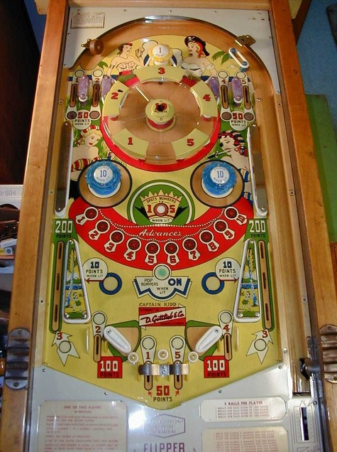

The main goal of Captain Kidd is to collect rubies. A ruby is spotted each time the numbers 1 through 5 are completed. The top lanes include 1 and 2 on the left, and 4 and 5 on the right. The far out lanes award the number 3; the out lanes behind the flipper hinges award 2 and 4; the out lanes between the flippers award 1 and 5. You can also earn the numbers 1 through 5 by hitting the wall switches that face the pop bumper within the "wheel" structure at the top of the game. When lit, the rollover button between the blue pop bumpers will complete the entire current set of 1-5, awarding a ruby and resetting the sequence; this button is lit intermittently based on 1-point switch hits, and lights less frequently the more rubies you already have, being effectively random. Free games can be awarded for reaching certain numbers of rubies. Since progress on each 1-5 sequence and the number of rubies earned will carry over from player, the number of rubies required for a free game is higher in a 2-player game.
Top lanes score 10 points or 50 when lit; one top lane in each pair is lit, alternating based on 1-point switch hits. The pop bumper in the center of the "wheel" scores 10 points.
The rollover button closer to the flippers turns on the blue pop bumpers and slingshots if it is pressed when lit. 50-point switches alternate whether the button is lit or not. If the pop bumpers and slingshots are lit, they will unlight the next time the 100-point digit in either score changes.
There are 6 out lanes: two on the edges of the table, two behind the flipper hinges, and two between the flippers. The slingshots are very tall and vertical to account for how the far out lanes have 3 different rollover switches: two that score 100 points each, and one that awards the number 3 in the 1-5 sequence. The out lanes behind the flipper hinges score 100 points, and the out lanes between the flippers score 50. There is no end of ball bonus or extra ball feature. Tilt ends game, but only for the player who tilted.
The below picture of Captain Kidd's playfield was taken from the Internet Pinball Database, where it was originally provided by Jim Zitzer.
